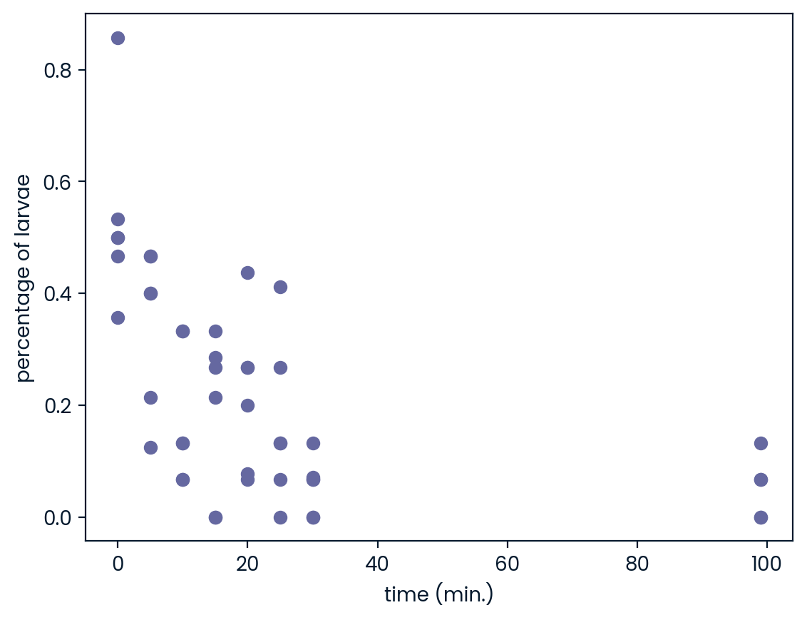
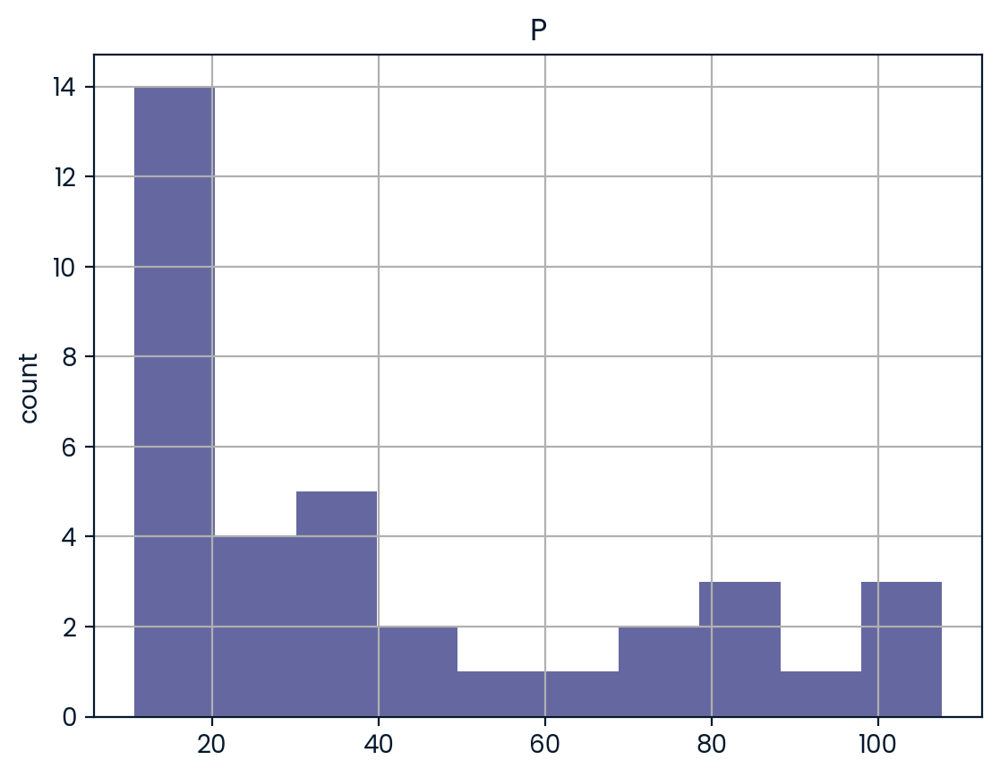
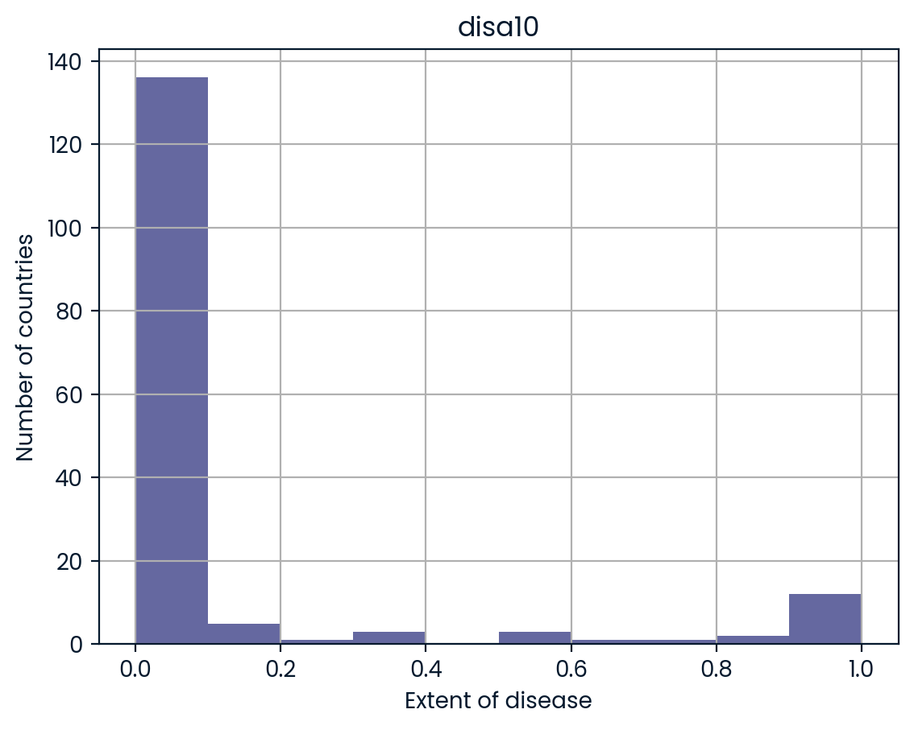
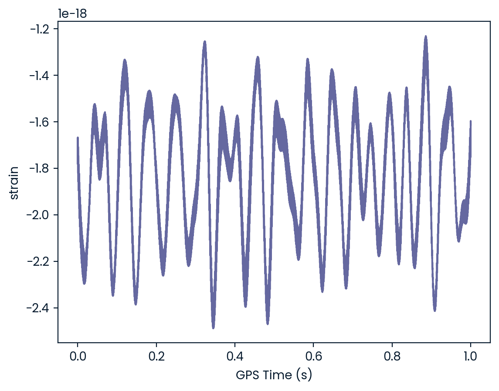

Introduction to Importing Data in Python
# Import the course packages
import pandas as pd
import numpy as np
import matplotlib.pyplot as plt
import scipy.io
import h5py
from sas7bdat import SAS7BDAT
from sqlalchemy import create_engine
import pickle
# Import the course datasets
titanic = pd.read_csv("datasets/titanic_sub.csv")
battledeath_2002 = pd.ExcelFile("datasets/battledeath.xlsx").parse("2002")
engine = create_engine('sqlite:///datasets/Chinook.sqlite')
con = engine.connect()
rs = con.execute('SELECT * FROM Album')
chinook = pd.DataFrame(rs.fetchall())
seaslug = np.loadtxt("datasets/seaslug.txt", delimiter="\t", dtype=str)Chapter 1: Introduction and flat files
In this chapter, you’ll learn how to import data into Python from all types of flat files, which are a simple and prevalent form of data storage. You’ve previously learned how to use NumPy and pandas—you will learn how to use these packages to import flat files and customize your imports.
Importing entire text files
In this exercise, you’ll be working with the file moby_dick.txt. It is a text file that contains the opening sentences of Moby Dick, one of the great American novels! Here you’ll get experience opening a text file, printing its contents to the shell and, finally, closing it. ### Instructions - Open the file moby_dick.txt as read-only and store it in the variable file. Make sure to pass the filename enclosed in quotation marks ’’. - Print the contents of the file to the shell using the print() function. As Hugo showed in the video, you’ll need to apply the method read() to the object file. - Check whether the file is closed by executing print(file.closed). - Close the file using the close() method. - Check again that the file is closed as you did above.
# Open a file: file
file = open('datasets/seaslug.txt', mode='r')
# Print it
print(file.read())
# Check whether file is closed
print(file.closed)
# Close file
file.close()
# Check whether file is closed
print(file.closed)Time Percent
99 0.067
99 0.133
99 0.067
99 0
99 0
0 0.5
0 0.467
0 0.857
0 0.5
0 0.357
0 0.533
5 0.467
5 0.467
5 0.125
5 0.4
5 0.214
5 0.4
10 0.067
10 0.067
10 0.333
10 0.333
10 0.133
10 0.133
15 0.267
15 0.286
15 0.333
15 0.214
15 0
15 0
20 0.267
20 0.2
20 0.267
20 0.437
20 0.077
20 0.067
25 0.133
25 0.267
25 0.412
25 0
25 0.067
25 0.133
30 0
30 0.071
30 0
30 0.067
30 0.067
30 0.133
False
TrueImporting text files line by line
For large files, we may not want to print all of their content to the shell: you may wish to print only the first few lines. Enter the readline() method, which allows you to do this. When a file called file is open, you can print out the first line by executing file.readline(). If you execute the same command again, the second line will print, and so on.
In the introductory video, Hugo also introduced the concept of a context manager. He showed that you can bind a variable file by using a context manager construct:
with open('huck_finn.txt') as file:While still within this construct, the variable file will be bound to open(‘huck_finn.txt’); thus, to print the file to the shell, all the code you need to execute is:
with open('huck_finn.txt') as file:
print(file.readline())You’ll now use these tools to print the first few lines of moby_dick.txt! ### Instructions - Open moby_dick.txt using the with context manager and the variable file. - Print the first three lines of the file to the shell by using readline() three times within the context manager.
# Read & print the first 3 lines
with open('datasets/seaslug.txt') as file:
print(file.readline())
print(file.readline())
print(file.readline())Time Percent
99 0.067
99 0.133Using NumPy to import flat files
In this exercise, you’re now going to load the MNIST digit recognition dataset using the numpy function loadtxt() and see just how easy it can be:
The first argument will be the filename.
The second will be the delimiter which, in this case, is a comma.You can find more information about the MNIST dataset here on the webpage of Yann LeCun, who is currently Director of AI Research at Facebook and Founding Director of the NYU Center for Data Science, among many other things. ### Instructions - Fill in the arguments of np.loadtxt() by passing file and a comma ‘,’ for the delimiter. - Fill in the argument of print() to print the type of the object digits. Use the function type(). - Execute the rest of the code to visualize one of the rows of the data.
# Import package
import numpy as np
# Assign filename to variable: file
file = 'digits.csv'
# Load file as array: digits
digits = np.loadtxt(file, delimiter=',')
# Print datatype of digits
print(type(digits))
# Select and reshape a row
im = digits[21, 1:]
im_sq = np.reshape(im, (28, 28))
# Plot reshaped data (matplotlib.pyplot already loaded as plt)
plt.imshow(im_sq, cmap='Greys', interpolation='nearest')
plt.show()Customizing your NumPy import
What if there are rows, such as a header, that you don’t want to import? What if your file has a delimiter other than a comma? What if you only wish to import particular columns?
There are a number of arguments that np.loadtxt() takes that you’ll find useful:
delimiter changes the delimiter that loadtxt() is expecting.
You can use ',' for comma-delimited.
You can use '\t' for tab-delimited.
skiprows allows you to specify how many rows (not indices) you wish to skip
usecols takes a list of the indices of the columns you wish to keep.The file that you’ll be importing, digits_header.txt, has a header and is tab-delimited. ### Instructions - Complete the arguments of np.loadtxt(): the file you’re importing is tab-delimited, you want to skip the first row and you only want to import the first and third columns. - Complete the argument of the print() call in order to print the entire array that you just imported.
# Import numpy
import numpy as np
# Assign the filename: file
file = 'digits_header.txt'
# Load the data: data
data = np.loadtxt(file, delimiter='\t', skiprows=1, usecols=[0, 2])
# Print data
print(data)Importing different datatypes
The file seaslug.txt
has a text header, consisting of strings
is tab-delimited.These data consists of percentage of sea slug larvae that had metamorphosed in a given time period. Read more here.
Due to the header, if you tried to import it as-is using np.loadtxt(), Python would throw you a ValueError and tell you that it could not convert string to float. There are two ways to deal with this: firstly, you can set the data type argument dtype equal to str (for string).
Alternatively, you can skip the first row as we have seen before, using the skiprows argument. ### Instructions - Complete the first call to np.loadtxt() by passing file as the first argument. - Execute print(data[0]) to print the first element of data. - Complete the second call to np.loadtxt(). The file you’re importing is tab-delimited, the datatype is float, and you want to skip the first row. - Print the 10th element of data_float by completing the print() command. Be guided by the previous print() call. Execute the rest of the code to visualize the data.
# Assign filename: file
file = 'datasets/seaslug.txt'
# Import file: data
data = np.loadtxt(file, delimiter='\t', dtype=str)
# Print the first element of data
print(data[0])
# Import data as floats and skip the first row: data_float
data_float = np.loadtxt(file, delimiter='\t', dtype=float, skiprows=1)
# Print the 10th element of data_float
print(data_float[9])
# Plot a scatterplot of the data
plt.scatter(data_float[:, 0], data_float[:, 1])
plt.xlabel('time (min.)')
plt.ylabel('percentage of larvae')
plt.show()['Time' 'Percent']
[0. 0.357]
Working with mixed datatypes
You have just used np.genfromtxt() to import data containing mixed datatypes. There is also another function np.recfromcsv() that behaves similarly to np.genfromtxt(), except that its default dtype is None. In this exercise, you’ll practice using this to achieve the same result. ### Instructions - Import titanic.csv using the function np.recfromcsv() and assign it to the variable, d. You’ll only need to pass file to it because it has the defaults delimiter=‘,’ and names=True in addition to dtype=None! - Run the remaining code to print the first three entries of the resulting array d.
# Assign the filename: file
file = 'datasets/titanic_sub.csv'
# Import file using np.recfromcsv: d
d = np.recfromcsv(file)
# Print out first three entries of d
print(d[:3])[(1, 0, 3, b'male', 22., 1, 0, b'A/5 21171', 7.25 , b'', b'S')
(2, 1, 1, b'female', 38., 1, 0, b'PC 17599', 71.2833, b'C85', b'C')
(3, 1, 3, b'female', 26., 0, 0, b'STON/O2. 3101282', 7.925 , b'', b'S')]Using pandas to import flat files as DataFrames (1)
In the last exercise, you were able to import flat files containing columns with different datatypes as numpy arrays. However, the DataFrame object in pandas is a more appropriate structure in which to store such data and, thankfully, we can easily import files of mixed data types as DataFrames using the pandas functions read_csv() and read_table(). ### Instructions - Import the pandas package using the alias pd. - Read titanic.csv into a DataFrame called df. The file name is already stored in the file object. - In a print() call, view the head of the DataFrame.
# Import pandas
import pandas as pd
# Assign the filename: file
file = 'datasets/titanic_sub.csv'
# Read the file into a DataFrame: df
df = pd.read_csv(file)
# View the head of the DataFrame
print(df.head()) PassengerId Survived Pclass ... Fare Cabin Embarked
0 1 0 3 ... 7.2500 NaN S
1 2 1 1 ... 71.2833 C85 C
2 3 1 3 ... 7.9250 NaN S
3 4 1 1 ... 53.1000 C123 S
4 5 0 3 ... 8.0500 NaN S
[5 rows x 11 columns]Using pandas to import flat files as DataFrames (2)
In the last exercise, you were able to import flat files into a pandas DataFrame. As a bonus, it is then straightforward to retrieve the corresponding numpy array using the attribute values. You’ll now have a chance to do this using the MNIST dataset, which is available as digits.csv. ### Instructions - Import the first 5 rows of the file into a DataFrame using the function pd.read_csv() and assign the result to data. You’ll need to use the arguments nrows and header (there is no header in this file). - Build a numpy array from the resulting DataFrame in data and assign to data_array. - Execute print(type(data_array)) to print the datatype of data_array.
# Assign the filename: file
file = 'datasets/titanic_sub.csv'
# Read the first 5 rows of the file into a DataFrame: data
data = pd.read_csv(file, nrows=5, header=None)
# Build a numpy array from the DataFrame: data_array
data_array = data.values
# Print the datatype of data_array to the shell
print(type(data_array))<class 'numpy.ndarray'>Customizing your pandas import
The pandas package is also great at dealing with many of the issues you will encounter when importing data as a data scientist, such as comments occurring in flat files, empty lines and missing values. Note that missing values are also commonly referred to as NA or NaN. To wrap up this chapter, you’re now going to import a slightly corrupted copy of the Titanic dataset titanic_corrupt.txt, which
contains comments after the character '#'
is tab-delimited.Instructions
- Complete the sep (the pandas version of delim), comment and na_values arguments of pd.read_csv(). comment takes characters that comments occur after in the file, which in this case is ‘#’. na_values takes a list of strings to recognize as NA/NaN, in this case the string ‘Nothing’.
- Execute the rest of the code to print the head of the resulting DataFrame and plot the histogram of the ‘Age’ of passengers aboard the Titanic.
# Import matplotlib.pyplot as plt
import matplotlib.pyplot as plt
# Assign filename: file
file = 'titanic_corrupt.txt'
# Import file: data
data = pd.read_csv(file, sep='\t', comment='#', na_values=['Nothing'])
# Print the head of the DataFrame
print(data.head())
# Plot 'Age' variable in a histogram
pd.DataFrame.hist(data[['Age']])
plt.xlabel('Age (years)')
plt.ylabel('count')
plt.show()Chapter 2: Importing data from other file types
You’ve learned how to import flat files, but there are many other file types you will potentially have to work with as a data scientist. In this chapter, you’ll learn how to import data into Python from a wide array of important file types. These include pickled files, Excel spreadsheets, SAS and Stata files, HDF5 files, a file type for storing large quantities of numerical data, and MATLAB files.
Loading a pickled file
There are a number of datatypes that cannot be saved easily to flat files, such as lists and dictionaries. If you want your files to be human readable, you may want to save them as text files in a clever manner. JSONs, which you will see in a later chapter, are appropriate for Python dictionaries.
However, if you merely want to be able to import them into Python, you can serialize them. All this means is converting the object into a sequence of bytes, or a bytestream.
In this exercise, you’ll import the pickle package, open a previously pickled data structure from a file and load it. ### Instructions - Import the pickle package. - Complete the second argument of open() so that it is read only for a binary file. This argument will be a string of two letters, one signifying ‘read only’, the other ‘binary’. - Pass the correct argument to pickle.load(); it should use the variable that is bound to open. - Print the data, d. - Print the datatype of d; take your mind back to your previous use of the function type().
# Import pickle package
import pickle
# Open pickle file and load data
with open('data.pkl', 'rb') as file:
d = pickle.load(file)
# Print data
print(d)
# Print datatype
print(type(d))Listing sheets in Excel files
Whether you like it or not, any working data scientist will need to deal with Excel spreadsheets at some point in time. You won’t always want to do so in Excel, however!
Here, you’ll learn how to use pandas to import Excel spreadsheets and how to list the names of the sheets in any loaded .xlsx file.
Recall from the video that, given an Excel file imported into a variable spreadsheet, you can retrieve a list of the sheet names using the attribute spreadsheet.sheet_names.
Specifically, you’ll be loading and checking out the spreadsheet ‘battledeath.xlsx’, modified from the Peace Research Institute Oslo’s (PRIO) dataset. This data contains age-adjusted mortality rates due to war in various countries over several years. ### Instructions - Assign the spreadsheet filename (provided above) to the variable file. - Pass the correct argument to pd.ExcelFile() to load the file using pandas, assigning the result to the variable xls. - Print the sheetnames of the Excel spreadsheet by passing the necessary argument to the print() function.
# Import pandas
import pandas as pd
# Assign spreadsheet filename: file
file = 'datasets/battledeath.xlsx'
# Load spreadsheet: xls
xls = pd.ExcelFile(file)
# Print sheet names
print(xls.sheet_names)['2002', '2004']Importing sheets from Excel files
In the previous exercises, you saw that the Excel file contains two sheets, ‘2002’ and ‘2004’. The next step is to import these.
In this exercise, you’ll learn how to import any given sheet of your loaded .xlsx file as a DataFrame. You’ll be able to do so by specifying either the sheet’s name or its index.
The spreadsheet ‘battledeath.xlsx’ is already loaded as xls. ### Instructions - Load the sheet ‘2004’ into the DataFrame df1 using its name as a string. - Print the head of df1 to the shell. - Load the sheet 2002 into the DataFrame df2 using its index (0). - Print the head of df2 to the shell.
# Load a sheet into a DataFrame by name: df1
df1 = xls.parse('2004')
# Print the head of the DataFrame df1
print(df1.head())
# Load a sheet into a DataFrame by index: df2
df2 = xls.parse(0)
# Print the head of the DataFrame df2
print(df2.head()) War(country) 2004
0 Afghanistan 9.451028
1 Albania 0.130354
2 Algeria 3.407277
3 Andorra 0.000000
4 Angola 2.597931
War, age-adjusted mortality due to 2002
0 Afghanistan 36.083990
1 Albania 0.128908
2 Algeria 18.314120
3 Andorra 0.000000
4 Angola 18.964560Customizing your spreadsheet import
Here, you’ll parse your spreadsheets and use additional arguments to skip rows, rename columns and select only particular columns.
The spreadsheet ‘battledeath.xlsx’ is already loaded as xls.
As before, you’ll use the method parse(). This time, however, you’ll add the additional arguments skiprows, names and usecols. These skip rows, name the columns and designate which columns to parse, respectively. All these arguments can be assigned to lists containing the specific row numbers, strings and column numbers, as appropriate. ### Instructions - Parse the first sheet by index. In doing so, skip the first row of data and name the columns ‘Country’ and ‘AAM due to War (2002)’ using the argument names. The values passed to skiprows and names all need to be of type list. - Parse the second sheet by index. In doing so, parse only the first column with the usecols parameter, skip the first row and rename the column ‘Country’. The argument passed to usecols also needs to be of type list.
# Parse the first sheet and rename the columns: df1
df1 = xls.parse(0, skiprows=[0], names=['Country', 'AAM due to War (2002)'])
# Print the head of the DataFrame df1
print(df1.head())
# Parse the first column of the second sheet and rename the column: df2
df2 = xls.parse(1, usecols=[0], skiprows=[0], names=['Country'])
# Print the head of the DataFrame df2
print(df2.head()) Country AAM due to War (2002)
0 Albania 0.128908
1 Algeria 18.314120
2 Andorra 0.000000
3 Angola 18.964560
4 Antigua and Barbuda 0.000000
Country
0 Albania
1 Algeria
2 Andorra
3 Angola
4 Antigua and BarbudaImporting SAS files
In this exercise, you’ll figure out how to import a SAS file as a DataFrame using SAS7BDAT and pandas. The file ‘sales.sas7bdat’ is already in your working directory and both pandas and matplotlib.pyplot have already been imported as follows:
import pandas as pd import matplotlib.pyplot as plt
The data are adapted from the website of the undergraduate text book Principles of Econometrics by Hill, Griffiths and Lim. ### Instructions - Import the module SAS7BDAT from the library sas7bdat. - In the context of the file ‘sales.sas7bdat’, load its contents to a DataFrame df_sas, using the method to_data_frame() on the object file. - Print the head of the DataFrame df_sas. - Execute your entire script to produce a histogram plot!
# Import sas7bdat package
from sas7bdat import SAS7BDAT
# Save file to a DataFrame: df_sas
with SAS7BDAT('datasets/sales.sas7bdat') as file:
df_sas = file.to_data_frame()
# Print head of DataFrame
print(df_sas.head())
# Plot histograms of a DataFrame feature (pandas and pyplot already imported)
pd.DataFrame.hist(df_sas[['P']])
plt.ylabel('count')
plt.show() YEAR P S
0 1950.0 12.9 181.899994
1 1951.0 11.9 245.000000
2 1952.0 10.7 250.199997
3 1953.0 11.3 265.899994
4 1954.0 11.2 248.500000
Importing Stata files
Here, you’ll gain expertise in importing Stata files as DataFrames using the pd.read_stata() function from pandas. The last exercise’s file, ‘disarea.dta’, is still in your working directory. ### Instructions - Use pd.read_stata() to load the file ‘disarea.dta’ into the DataFrame df. - Print the head of the DataFrame df. - Visualize your results by plotting a histogram of the column disa10. We’ve already provided this code for you, so just run it!
# Import pandas
import pandas as pd
# Load Stata file into a pandas DataFrame: df
df = pd.read_stata('datasets/disarea.dta')
# Print the head of the DataFrame df
print(df.head())
# Plot histogram of one column of the DataFrame
pd.DataFrame.hist(df[['disa10']])
plt.xlabel('Extent of disease')
plt.ylabel('Number of countries')
plt.show() wbcode country disa1 disa2 ... disa22 disa23 disa24 disa25
0 AFG Afghanistan 0.00 0.00 ... 0.00 0.02 0.00 0.00
1 AGO Angola 0.32 0.02 ... 0.99 0.98 0.61 0.00
2 ALB Albania 0.00 0.00 ... 0.00 0.00 0.00 0.16
3 ARE United Arab Emirates 0.00 0.00 ... 0.00 0.00 0.00 0.00
4 ARG Argentina 0.00 0.24 ... 0.00 0.01 0.00 0.11
[5 rows x 27 columns]
Using h5py to import HDF5 files
The file ‘LIGO_data.hdf5’ is already in your working directory. In this exercise, you’ll import it using the h5py library. You’ll also print out its datatype to confirm you have imported it correctly. You’ll then study the structure of the file in order to see precisely what HDF groups it contains.
You can find the LIGO data plus loads of documentation and tutorials here. There is also a great tutorial on Signal Processing with the data here. ### Instructions - Import the package h5py. - Assign the name of the file to the variable file. - Load the file as read only into the variable data. - Print the datatype of data. - Print the names of the groups in the HDF5 file ‘LIGO_data.hdf5’.
# Import packages
import numpy as np
import h5py
# Assign filename: file
file = 'datasets/L-L1_LOSC_4_V1-1126259446-32.hdf5'
# Load file: data
data = h5py.File(file, 'r')
# Print the datatype of the loaded file
print(type(data))
# Print the keys of the file
for key in data.keys():
print(key)<class 'h5py._hl.files.File'>
meta
quality
strainExtracting data from your HDF5 file
In this exercise, you’ll extract some of the LIGO experiment’s actual data from the HDF5 file and you’ll visualize it.
To do so, you’ll need to first explore the HDF5 group ‘strain’. ### Instructions - Assign the HDF5 group data[‘strain’] to group. - In the for loop, print out the keys of the HDF5 group in group. - Assign the time series data data[‘strain’][‘Strain’] to a NumPy array called strain. - Set num_samples equal to 10000, the number of time points we wish to sample. - Execute the rest of the code to produce a plot of the time series data in LIGO_data.hdf5.
# Get the HDF5 group: group
group = data['strain']
# Check out keys of group
for key in group.keys():
print(key)
# Set variable equal to time series data: strain
strain = np.array(data['strain']['Strain'])
# Set number of time points to sample: num_samples
num_samples = 10000
# Set time vector
time = np.arange(0, 1, 1/num_samples)
# Plot data
plt.plot(time, strain[:num_samples])
plt.xlabel('GPS Time (s)')
plt.ylabel('strain')
plt.show()Strain
Loading .mat files
In this exercise, you’ll figure out how to load a MATLAB file using scipy.io.loadmat() and you’ll discover what Python datatype it yields.
The file ‘albeck_gene_expression.mat’ is in your working directory. This file contains gene expression data from the Albeck Lab at UC Davis. ### Instructions - Import the package scipy.io. - Load the file ‘albeck_gene_expression.mat’ into the variable mat; do so using the function scipy.io.loadmat(). - Use the function type() to print the datatype of mat to the IPython shell.
# Import package
import scipy.io
# Load MATLAB file: mat
mat = scipy.io.loadmat('albeck_gene_expression.mat')
# Print the datatype type of mat
print(type(mat))The structure of .mat in Python
Here, you’ll discover what is in the MATLAB dictionary that you loaded in the previous exercise.
The file ‘albeck_gene_expression.mat’ is already loaded into the variable mat. The following libraries have already been imported as follows:
import scipy.io
import matplotlib.pyplot as plt
import numpy as npOnce again, this file contains gene expression data from the Albeck Lab at UCDavis. ### Instructions - Use the method .keys() on the dictionary mat to print the keys. Most of these keys (in fact the ones that do NOT begin and end with ‘__’) are variables from the corresponding MATLAB environment. - Print the type of the value corresponding to the key ‘CYratioCyt’ in mat. Recall that mat[‘CYratioCyt’] accesses the value. - Print the shape of the value corresponding to the key ‘CYratioCyt’ using the numpy function shape(). - Execute the entire script to see some oscillatory gene expression data!
# Print the keys of the MATLAB dictionary
print(mat.keys())
# Print the type of the value corresponding to the key 'CYratioCyt'
print(type(mat['CYratioCyt']))
# Print the shape of the value corresponding to the key 'CYratioCyt'
print(np.shape(mat['CYratioCyt']))
# Subset the array and plot it
data = mat['CYratioCyt'][25, 5:]
fig = plt.figure()
plt.plot(data)
plt.xlabel('time (min.)')
plt.ylabel('normalized fluorescence (measure of expression)')
plt.show()Chapter 4: Working with relational databases in Python
In this chapter, you’ll learn how to extract meaningful data from relational databases, an essential skill for any data scientist. You will learn about relational models, how to create SQL queries, how to filter and order your SQL records, and how to perform advanced queries by joining database tables.
Creating a database engine
Here, you’re going to fire up your very first SQL engine. You’ll create an engine to connect to the SQLite database ‘Chinook.sqlite’, which is in your working directory. Remember that to create an engine to connect to ‘Northwind.sqlite’, Hugo executed the command
engine = create_engine('sqlite:///Northwind.sqlite')Here, ‘sqlite:///Northwind.sqlite’ is called the connection string to the SQLite database Northwind.sqlite. A little bit of background on the Chinook database: the Chinook database contains information about a semi-fictional digital media store in which media data is real and customer, employee and sales data has been manually created.
Why the name Chinook, you ask? According to their website,
The name of this sample database was based on the Northwind database. Chinooks are winds in the interior West of North America, where the Canadian Prairies and Great Plains meet various mountain ranges. Chinooks are most prevalent over southern Alberta in Canada. Chinook is a good name choice for a database that intends to be an alternative to Northwind.Instructions
- Import the function create_engine from the module sqlalchemy.
- Create an engine to connect to the SQLite database ‘Chinook.sqlite’ and assign it to engine.
# Import necessary module
from sqlalchemy import create_engine
# Create engine: engine
engine = create_engine('sqlite:///Chinook.sqlite')What are the tables in the database?
In this exercise, you’ll once again create an engine to connect to ‘Chinook.sqlite’. Before you can get any data out of the database, however, you’ll need to know what tables it contains!
To this end, you’ll save the table names to a list using the method table_names() on the engine and then you will print the list. ### Instructions - Import the function create_engine from the module sqlalchemy. - Create an engine to connect to the SQLite database ‘Chinook.sqlite’ and assign it to engine. - Using the method table_names() on the engine engine, assign the table names of ‘Chinook.sqlite’ to the variable table_names. - Print the object table_names to the shell.
# Import necessary module
from sqlalchemy import create_engine
# Create engine: engine
engine = create_engine('sqlite:///Chinook.sqlite')
# Save the table names to a list: table_names
table_names = engine.table_names()
# Print the table names to the shell
print(table_names)[]The Hello World of SQL Queries!
Now, it’s time for liftoff! In this exercise, you’ll perform the Hello World of SQL queries, SELECT, in order to retrieve all columns of the table Album in the Chinook database. Recall that the query SELECT * selects all columns. ### Instructions - Open the engine connection as con using the method connect() on the engine. - Execute the query that selects ALL columns from the Album table. Store the results in rs. - Store all of your query results in the DataFrame df by applying the fetchall() method to the results rs. - Close the connection!
# Import packages
from sqlalchemy import create_engine
import pandas as pd
# Create engine: engine
engine = create_engine('sqlite:///Chinook.sqlite')
# Open engine connection
con = engine.connect()
# Perform query: rs
rs = con.execute("SELECT * FROM Album")
# Save results of the query to DataFrame: df
df = pd.DataFrame(rs.fetchall())
# Close connection
con.close()
# Print head of DataFrame df
print(df.head())Customizing the Hello World of SQL Queries
Congratulations on executing your first SQL query! Now you’re going to figure out how to customize your query in order to:
Select specified columns from a table;
Select a specified number of rows;
Import column names from the database table.Recall that Hugo performed a very similar query customization in the video:
engine = create_engine(‘sqlite:///Northwind.sqlite’)
with engine.connect() as con: rs = con.execute(“SELECT OrderID, OrderDate, ShipName FROM Orders”) df = pd.DataFrame(rs.fetchmany(size=5)) df.columns = rs.keys()
Packages have already been imported as follows:
from sqlalchemy import create_engine import pandas as pd
The engine has also already been created:
engine = create_engine(‘sqlite:///Chinook.sqlite’)
The engine connection is already open with the statement
with engine.connect() as con:
All the code you need to complete is within this context. ### Instructions - Execute the SQL query that selects the columns LastName and Title from the Employee table. Store the results in the variable rs. - Apply the method fetchmany() to rs in order to retrieve 3 of the records. Store them in the DataFrame df. - Using the rs object, set the DataFrame’s column names to the corresponding names of the table columns.
# Open engine in context manager
# Perform query and save results to DataFrame: df
with engine.connect() as con:
rs = con.execute("SELECT LastName, Title FROM Employee")
df = pd.DataFrame(rs.fetchmany(size=3))
df.columns = rs.keys()
# Print the length of the DataFrame df
print(len(df))
# Print the head of the DataFrame df
print(df.head())Filtering your database records using SQL’s WHERE
You can now execute a basic SQL query to select records from any table in your database and you can also perform simple query customizations to select particular columns and numbers of rows.
There are a couple more standard SQL query chops that will aid you in your journey to becoming an SQL ninja.
Let’s say, for example that you wanted to get all records from the Customer table of the Chinook database for which the Country is ‘Canada’. You can do this very easily in SQL using a SELECT statement followed by a WHERE clause as follows:
SELECT * FROM Customer WHERE Country = ‘Canada’
In fact, you can filter any SELECT statement by any condition using a WHERE clause. This is called filtering your records.
In this interactive exercise, you’ll select all records of the Employee table for which ‘EmployeeId’ is greater than or equal to 6.
Packages are already imported as follows:
import pandas as pd from sqlalchemy import create_engine
Query away! ### Instructions - Complete the argument of create_engine() so that the engine for the SQLite database ‘Chinook.sqlite’ is created. - Execute the query that selects all records from the Employee table where ‘EmployeeId’ is greater than or equal to 6. Use the >= operator and assign the results to rs. - Apply the method fetchall() to rs in order to fetch all records in rs. Store them in the DataFrame df. - Using the rs object, set the DataFrame’s column names to the corresponding names of the table columns.
# Create engine: engine
engine = create_engine('sqlite:///Chinook.sqlite')
# Open engine in context manager
# Perform query and save results to DataFrame: df
with engine.connect() as con:
rs = con.execute("SELECT * FROM Employee WHERE EmployeeId >= 6")
df = pd.DataFrame(rs.fetchall())
df.columns = rs.keys()
# Print the head of the DataFrame df
print(df.head())Ordering your SQL records with ORDER BY
You can also order your SQL query results. For example, if you wanted to get all records from the Customer table of the Chinook database and order them in increasing order by the column SupportRepId, you could do so with the following query:
“SELECT * FROM Customer ORDER BY SupportRepId”
In fact, you can order any SELECT statement by any column.
In this interactive exercise, you’ll select all records of the Employee table and order them in increasing order by the column BirthDate.
Packages are already imported as follows:
import pandas as pd from sqlalchemy import create_engine
Get querying! ### Instructions - Using the function create_engine(), create an engine for the SQLite database Chinook.sqlite and assign it to the variable engine. - In the context manager, execute the query that selects all records from the Employee table and orders them in increasing order by the column BirthDate. Assign the result to rs. - In a call to pd.DataFrame(), apply the method fetchall() to rs in order to fetch all records in rs. Store them in the DataFrame df. - Set the DataFrame’s column names to the corresponding names of the table columns.
# Create engine: engine
engine = create_engine('sqlite:///Chinook.sqlite')
# Open engine in context manager
with engine.connect() as con:
rs = con.execute("SELECT * FROM Employee ORDER BY BirthDate")
df = pd.DataFrame(rs.fetchall())
# Set the DataFrame's column names
df.columns = rs.keys()
# Print head of DataFrame
print(df.head())Pandas and The Hello World of SQL Queries!
Here, you’ll take advantage of the power of pandas to write the results of your SQL query to a DataFrame in one swift line of Python code!
You’ll first import pandas and create the SQLite ‘Chinook.sqlite’ engine. Then you’ll query the database to select all records from the Album table.
Recall that to select all records from the Orders table in the Northwind database, Hugo executed the following command:
df = pd.read_sql_query(“SELECT * FROM Orders”, engine)
Instructions
- Import the pandas package using the alias pd.
- Using the function create_engine(), create an engine for the SQLite database Chinook.sqlite and assign it to the variable engine.
- Use the pandas function read_sql_query() to assign to the variable df the DataFrame of results from the following query: select all records from the table Album.
- The remainder of the code is included to confirm that the DataFrame created by this method is equal to that created by the previous method that you learned.
# Import packages
from sqlalchemy import create_engine
import pandas as pd
# Create engine: engine
engine = create_engine('sqlite:///Chinook.sqlite')
# Execute query and store records in DataFrame: df
df = pd.read_sql_query("SELECT * FROM Album", engine)
# Print head of DataFrame
print(df.head())
# Open engine in context manager and store query result in df1
with engine.connect() as con:
rs = con.execute("SELECT * FROM Album")
df1 = pd.DataFrame(rs.fetchall())
df1.columns = rs.keys()
# Confirm that both methods yield the same result
print(df.equals(df1))Pandas for more complex querying
Here, you’ll become more familiar with the pandas function read_sql_query() by using it to execute a more complex query: a SELECT statement followed by both a WHERE clause AND an ORDER BY clause.
You’ll build a DataFrame that contains the rows of the Employee table for which the EmployeeId is greater than or equal to 6 and you’ll order these entries by BirthDate. ### Instructions - Using the function create_engine(), create an engine for the SQLite database Chinook.sqlite and assign it to the variable engine. - Use the pandas function read_sql_query() to assign to the variable df the DataFrame of results from the following query: select all records from the Employee table where the EmployeeId is greater than or equal to 6 and ordered by BirthDate (make sure to use WHERE and ORDER BY in this precise
# Import packages
from sqlalchemy import create_engine
import pandas as pd
# Create engine: engine
engine = create_engine('sqlite:///Chinook.sqlite')
# Execute query and store records in DataFrame: df
df = pd.read_sql_query(
"SELECT * FROM Employee WHERE EmployeeId >= 6 ORDER BY BirthDate",
engine
)
# Print head of DataFrame
print(df.head())The power of SQL lies in relationships between tables: INNER JOIN
Here, you’ll perform your first INNER JOIN! You’ll be working with your favourite SQLite database, Chinook.sqlite. For each record in the Album table, you’ll extract the Title along with the Name of the Artist. The latter will come from the Artist table and so you will need to INNER JOIN these two tables on the ArtistID column of both.
Recall that to INNER JOIN the Orders and Customers tables from the Northwind database, Hugo executed the following SQL query:
“SELECT OrderID, CompanyName FROM Orders INNER JOIN Customers on Orders.CustomerID = Customers.CustomerID”
The following code has already been executed to import the necessary packages and to create the engine:
import pandas as pd from sqlalchemy import create_engine engine = create_engine(‘sqlite:///Chinook.sqlite’)
Instructions
- Assign to rs the results from the following query: select all the records, extracting the Title of the record and Name of the artist of each record from the Album table and the Artist table, respectively. To do so, INNER JOIN these two tables on the ArtistID column of both.
- In a call to pd.DataFrame(), apply the method fetchall() to rs in order to fetch all records in rs. Store them in the DataFrame df.
- Set the DataFrame’s column names to the corresponding names of the table columns.
# Open engine in context manager
# Perform query and save results to DataFrame: df
with engine.connect() as con:
rs = con.execute("SELECT Title, Name FROM Album INNER JOIN Artist on Album.ArtistID = Artist.ArtistID")
df = pd.DataFrame(rs.fetchall())
df.columns = rs.keys()
# Print head of DataFrame df
print(df.head())Filtering your INNER JOIN
Congrats on performing your first INNER JOIN! You’re now going to finish this chapter with one final exercise in which you perform an INNER JOIN and filter the result using a WHERE clause.
Recall that to INNER JOIN the Orders and Customers tables from the Northwind database, Hugo executed the following SQL query:
“SELECT OrderID, CompanyName FROM Orders INNER JOIN Customers on Orders.CustomerID = Customers.CustomerID”
The following code has already been executed to import the necessary packages and to create the engine:
import pandas as pd from sqlalchemy import create_engine engine = create_engine(‘sqlite:///Chinook.sqlite’)
Instructions
- Use the pandas function read_sql_query() to assign to the variable df the DataFrame of results from the following query: select all records from PlaylistTrack INNER JOIN Track on PlaylistTrack.TrackId = Track.TrackId that satisfy the condition Milliseconds < 250000.
# Execute query and store records in DataFrame: df
df = pd.read_sql_query(
"SELECT * FROM PlaylistTrack INNER JOIN Track ON PlaylistTrack.TrackId = Track.TrackId WHERE Milliseconds < 250000",
engine
)
# Print head of DataFrame
print(df.head())